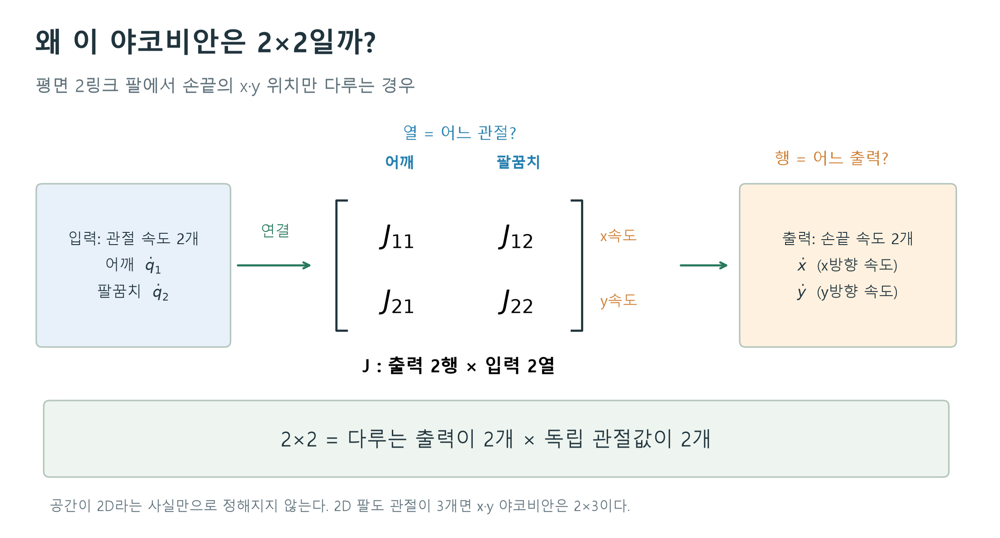
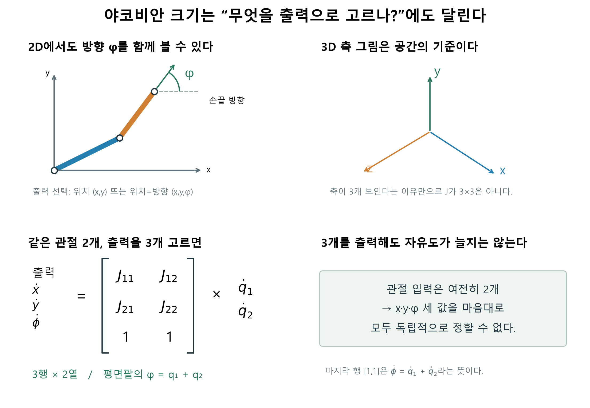

로봇 손끝에 펜을 달아 책상 위 점을 찍었다고 합시다. 지금 자세에서 어깨만 아주 조금 돌리면 손끝은 어느 쪽으로, 얼마나 움직일까요. 같은 질문을 팔꿈치만 돌려서도 해 봅니다. 링크 길이와 지금 자세는 고정이고, 바뀌는 것은 “어느 관절을, 얼마나 빨리 돌리느냐”입니다.
관절 하나의 영향이 한 열입니다


숫자·공식·코드로 이어 보기
가장 단순한 자세부터 봅니다. 팔을 오른쪽으로 쭉 펴서 손끝이 (0.7, 0)에 있는 자세, 즉 어깨 0°·팔꿈치 0°입니다. 여기서 어깨를 1rad/s로 돌리면 손끝은 어깨를 중심으로 원을 그리며, 그 순간의 속도는 반지름에 수직인 위쪽입니다. 반지름이 0.7m이므로 속도는 (0, 0.7)m/s입니다. 팔꿈치만 1rad/s로 돌리면 손끝은 팔꿈치를 중심으로 반지름 0.3m인 원을 그리므로 (0, 0.3)m/s입니다.
[ 0.7 0.3 ]
첫 행이 0입니다. 겁먹을 값이 아니라 “이 자세에서 두 관절을 어떻게 돌려도 손끝의 x방향 속도는 순간적으로 0”이라는 뜻입니다. 이미 팔이 x방향으로 최대로 뻗어 있어서 더 밀어낼 방법이 없기 때문입니다. 두 열이 모두 y방향을 가리킨다는 사실은 뒤에서 특이점이라고 부를 상황의 예고편입니다.
행과 열을 세는 규칙
이 표를 행렬로 적은 것이 야코비안 J이고, 읽는 법은 두 줄입니다. 행은 손끝 쪽 출력 성분, 열은 관절 쪽 입력 성분입니다. 지금은 손끝의 x·y 두 성분을 출력으로 골랐고 관절도 두 개이므로 2×2입니다. 칸이 네 개라고 자유도가 네 개인 것은 아닙니다. 행 수는 “무엇을 맞추려는가”, 열 수는 “무엇을 움직일 수 있는가”입니다.
출력 요구를 바꾸면 행 수가 달라집니다. 손끝의 방향 φ까지 맞추고 싶다면 출력이 (x, y, φ) 세 개가 되어 J는 3×2가 되고, φ = q₁ + q₂이므로 마지막 행은 [1, 1]입니다. 반대로 평면 3관절 팔에서 x, y만 요구하면 2×3입니다. 출력을 세 개 적을 수 있다고 해서 입력 두 개로 그 세 성분을 마음대로 독립 제어할 수 있는 것은 아닙니다. 이 구분은 특이점 차시에서 다시 쓰입니다.
자세를 바꾸면 같은 관절도 다른 속도를 냅니다
이번에는 자세만 바꿉니다. 어깨 30°·팔꿈치 45°에서 손끝은 (0.4241, 0.4898)m입니다. 같은 실험을 반복하면 어깨만 1rad/s일 때 손끝은 (−0.4898, 0.4241)m/s, 팔꿈치만 1rad/s일 때는 (−0.2898, 0.0776)m/s로 움직입니다.
[ 0.4241 0.0776 ]
첫 열의 길이는 0.6478이고, 이는 어깨에서 손끝까지의 거리와 정확히 같습니다. 1rad/s로 도는 원 위의 점은 반지름만큼의 속력으로 움직이니 당연한 일입니다. 또 첫 열과 손끝 위치 벡터의 내적은 0입니다. 속도가 반지름에 수직이라는 뜻이고, 어깨만 돌면 손끝이 어깨 중심의 원을 그린다는 관찰과 맞습니다.
여기서 흔한 오해 하나를 정리합니다. 같은 각속도라도 축에서 먼 점이 더 빨리 움직인다는 것은 맞지만, 손끝이 항상 가장 빠른 점은 아닙니다. 접힌 팔의 손끝이 어떤 관절 축에 가까우면 그 관절이 만드는 손끝 속도는 작습니다. 문 경첩과 손잡이를 떠올리면 됩니다. 같은 ω로 돌 때 선속도의 크기는 v = ωr⊥이고, r⊥는 축에 수직으로 잰 거리입니다. ω = 1rad/s일 때 축에서 0.1m인 점은 0.1m/s, 0.4m인 점은 0.4m/s입니다. 각속도는 같고 선속도만 다릅니다.
공식을 외우지 않아도 직접 움직여 재볼 수 있습니다
방금 확인한 두 열은 사실 재서 얻은 값입니다. 시장 저울에 물건을 올려 무게 변화를 읽듯, 관절 하나만 아주 조금 움직이고 손끝이 얼마나 달라졌는지 재는 방법이 있습니다. 다른 관절은 건드리지 않습니다. 앞으로 +h, 뒤로 −h만큼 움직여 양쪽 차이를 구하면 곡선의 기울기를 더 정확히 잽니다.
숫자·공식·코드로 이어 보기
eᵢ는 i번째 관절 자리만 1인 표시입니다. 앞뒤로 갔다 왔으므로 분모가 2h입니다. 이것을 중앙 차분이라고 부릅니다.
def numerical_jacobian(fk, q, h=1e-6):
q = np.asarray(q, dtype=float)
columns = []
for i in range(len(q)):
dq = np.zeros(len(q))
dq[i] = h
column = (fk(q+dq) - fk(q-dq)) / (2*h)
columns.append(column)
return np.column_stack(columns)읽는 순서는 이렇습니다. dq는 “i번째 관절만 h만큼”을 담은 배열입니다. fk(q+dq)는 그 관절을 조금 앞으로 돌린 자세의 손끝, fk(q-dq)는 뒤로 돌린 자세의 손끝입니다. 두 점의 차이를 2h로 나누면 “관절 1rad당 손끝 이동거리”가 되고, 그 단위가 m/rad입니다. columns에 모아 column_stack으로 옆으로 붙이면 그대로 J가 됩니다.
강의 교안은 h = 10−6rad를 씁니다. 이 값에서 수치로 잰 J는 [−0.4898, −0.2898; 0.4241, 0.0776]으로 공식과 소수 넷째 자리까지 같고, 최대 차이는 약 3.7×10−11입니다. 새 팔의 순기구학 함수만 있으면 야코비안 공식을 새로 유도하지 않고도 맞는지 검사할 수 있다는 것이 이 방법의 값어치입니다.
두 관절의 효과를 더하면 손끝 속도가 됩니다
이제 자세와 J는 그대로 두고, 관절 속도만 줍니다. 어깨 0.5rad/s, 팔꿈치 −0.2rad/s입니다. q는 각도였고 q̇(큐 닷)는 그 각도가 1초에 얼마나 변하는지입니다. 단위가 rad와 rad/s로 다릅니다.
숫자·공식·코드로 이어 보기
계산은 가로줄마다 따로 합니다. x속도는 (−0.4898)(0.5) + (−0.2898)(−0.2) ≈ −0.1869, y속도는 (0.4241)(0.5) + (0.0776)(−0.2) ≈ 0.1965m/s입니다. 손끝은 왼쪽 위로 갑니다. 0.001초 동안이라면 실제 이동은 대략 (−0.000187, 0.000197)m이고, 순기구학으로 0.001초 뒤 자세의 손끝을 직접 계산해도 같은 값이 나옵니다. J가 그 짧은 구간에서는 거의 변하지 않기 때문입니다.
velocity는 방향을 포함한 속도 벡터이고, speed는 그 벡터의 길이인 속력입니다. 오른쪽 3cm/s, 위쪽 4cm/s라면 속도는 [3, 4]cm/s이고 속력은 √(3²+4²) = 5cm/s입니다. 직각이므로 3+4 = 7로 더하지 않습니다. 여러 관절의 기여도 x끼리, y끼리 부호를 살려 더한 뒤 마지막에 크기를 구합니다. [3, 0] + [−3, 0] = [0, 0]이면 손끝은 멈춰 있고, 각 기여의 속력 3+3 = 6으로 더하면 서로 상쇄되는 방향을 잃습니다.
강의 코드의 출력 네 줄도 같은 구분으로 읽습니다. 첫 줄 J @ qdot은 위에서 계산한 손끝 속도 [−0.1869, 0.1965]m/s입니다. 둘째 줄은 0.001초 실제 이동으로 잰 평균 속도로, 거의 같습니다. 셋째 줄의 내적 0.0은 어깨 열이 손끝 반지름과 직각임을 보여 줍니다. 넷째 줄의 0.6478은 어깨 열 하나의 크기이며 어깨가 1rad/s일 때의 속력입니다. 두 모터를 함께 돌린 손끝 속력은 별도로 계산해야 하고, 그 값은 약 0.2712m/s입니다. 0.6478과 0.2712는 서로 다른 질문의 답입니다.
손끝_속도 = J @ 관절_속도→ 벡터. 방향과 빠르기를 함께 가집니다.np.linalg.norm(손끝_속도)→ 속력 0.2712m/s. 방향을 뺀 숫자 하나입니다.np.linalg.norm(첫_열)→ 0.6478m/rad. 어깨 하나만의 기여 크기입니다.np.linalg.norm(손끝)→ 0.6478m. 어깨에서 손끝까지의 거리입니다.
여기까지 읽었다면 같은 J를 손으로 직접 만져 보는 것이 좋습니다. 각도 슬라이더를 움직이면 네 칸의 숫자가 바뀌고, 손끝의 화살표가 어느 쪽을 가리키는지 눈으로 확인할 수 있습니다. 야코비안 실험실에서 각도·네 칸·손끝 움직임을 함께 보기 → 코드 한 줄씩이 어느 칸을 계산하는지는 야코비안 코드 해설에서 이어집니다. 이 페이지에서는 원리만 잡고, 코드 대조는 그쪽에 맡깁니다.
3차원에서는 회전축과 손끝까지의 화살표를 봅니다
문 경첩에서 멀리 떨어진 손잡이가 큰 원을 그리는 모습과 같은 원리입니다. 회전축에서 손끝으로 향하는 화살표를 알면, 그 원에 접하는 순간 속도의 방향도 알 수 있습니다. 3차원 팔에서는 관절마다 이 계산을 한 번씩 하면 되고, 미분 공식을 새로 세울 필요가 없습니다.
숫자·공식·코드로 이어 보기
회전 관절 i의 각속도 열: zᵢ
zᵢ는 바닥 기준으로 표현한 단위 회전축, pᵢ는 그 관절의 위치입니다. ×는 외적이고, 회전축과 반지름 화살표 모두에 수직인 접선 방향을 만듭니다. 각속도 열이 zᵢ 그 자체인 이유는 관절이 1rad/s로 돌면 손끝도 그 축으로 1rad/s 돌기 때문입니다. 위치 세 줄과 각속도 세 줄을 출력으로 고르고 회전 관절이 n개라면 J는6×n입니다. 이 교안 팔에서는 n=6이라6×6입니다. 6행은 관절이6개여서가 아니라 선택한 작업이 선속도3·각속도3이기 때문입니다.
허리 축 하나로 숫자 확인
허리 축이 (0,0,1)이고 손끝 x, y가 (0.478, 0.276)이라면, 외적의 수평 성분은 (−0.276, 0.478)입니다. x와 y가 자리를 바꾸고 하나의 부호가 뒤집힌 모양으로, 90° 회전 행렬이 (x, y)를 (−y, x)로 보내는 것과 같습니다. 그래서 교안의 허리 열은 [−0.276, 0.478, 0 | 0, 0, 1]입니다. 앞 세 칸은 손끝 선속도, 뒤 세 칸은 회전 속도입니다.
axis_world = R_world_joint @ local_axis
J[:3, i] = np.cross(axis_world, tip_position - joint_position)
J[3:, i] = axis_world첫 줄이 로컬 축을 바닥 기준으로 바꾸는 일을 합니다. 관절 위치는 바닥 기준인데 축만 로컬로 두고 계산하면 서로 다른 기준을 섞은 것이 되어 틀립니다. 모두 같은 기준에서 계산해야 합니다. 이 식은 회전 관절용이고, 직선 관절이면 선속도 열이 축 자체, 각속도 열이 0이 됩니다.
강의 교안은 이렇게 만든 위치·자세 열을 유한 차분 결과와 대조해 약 10−10 이하의 차이를 확인했습니다. 공식으로 세운 열과 재서 얻은 열이 같은 값을 가리킨다는 뜻입니다.
선택 · 배운 뒤 스스로 확인
열을 고르고, 행 수를 세어 보기
여기까지 읽은 뒤에 손으로 확인해 보고 싶을 때 펼치세요. 첫 문제는 같은 자세에서 팔꿈치만 움직일 때 어느 열을 쓰는지 묻고, 둘째 문제는 출력 요구를 바꾸면 J의 크기가 어떻게 되는지 묻습니다. 둘 다 방금 읽은 규칙을 그대로 적용하는 문제입니다.
연습 두 문제 펼치기
틀렸다면 계산보다 먼저 “행은 출력, 열은 입력”을 소리 내어 확인하세요. −0.06과 −0.03의 차이는 어느 열에 어느 속도를 곱했는지에서 갈립니다.
수업 근거 / 원문 보기
강의 교안 PDF p.19~22(열의 의미, 수치 미분, 속도 기하, 3차원 열)와 교과서 3.5절을 하나의 흐름으로 합쳤습니다. 교과서의 “축에서 먼 점이 더 크게 움직인다”는 도입과 h 선택에 대한 질문은 본문 설명으로 흡수했고, 교안·교과서를 나란히 비교하는 문단은 두지 않았습니다.
- 교과서 캐시: PDF 파일 116쪽 · PDF 파일 123쪽 · 3장 원고 전체
- 수치 구분: J = [0,0; 0.7,0.3], q = (30°,45°)의 J, 손끝 속도 [−0.1869, 0.1965]m/s, 첫 열 0.6478, 허리 열은 강의 교안·원고에 제시된 값입니다. 속력 0.2712m/s와 0.001초 이동량은 같은 속도 벡터에서 계산해 확인한 값입니다.
- 직접 만져 보기: 야코비안 실험실 · 코드 한 줄씩 해설 — 이 페이지의 설명을 반복하지 않고 조작과 코드 대조를 맡깁니다.